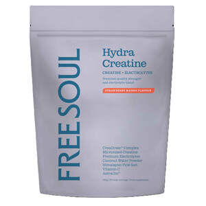

Trade Mark Journal No.2025/051 19 December 2025
UK00004279323 16 October 2025 (5,30,32)

- Class 5
- Pharmaceutical preparations; diabetic foodstuffs; herbal preparations; herbal supplements and herbal extracts; mineral supplements for foodstuffs; mineral preparations; mineral food supplements; food supplements; dietetic foods for use in clinical nutrition; food and beverage products for medically restricted diets; protein supplement shakes; nutritional meal replacements; supplements for foodstuffs for human consumption; vitamins and vitamin preparations; dietary supplements in the form of gummies; gummy vitamins; hydration supplements; mineral nutritional supplements; electrolyte supplements; electrolyte salt supplements; powdered supplements; supplements for drink mix; dietary supplements and dietetic preparations containing CBD.
- Class 30
- Convenience food and savoury snacks; cereal snacks; puffed corn snacks; baked goods; confectionery; chocolate; desserts; chocolate bars; protein bars; protein balls; convenience pasta and rice-based food; quinoa-based snacks; grain-based snacks; cereal snacks; puffed corn snacks; dessert puddings; protein cereal-based bars; protein cereal based balls; high-protein cereal bars; coffee substitutes; vegetable-based coffee substitutes; mushroom-based coffee substitutes; mushroom based drinks; convenience food and savoury snacks containing CBD; protein bars containing CBD; convenience pasta and rice-based food containing CBD; quinoa-based snacks containing CBD; grain-based snacks containing CBD; protein cereal-based bars containing CBD; mushroom coffee blend drinks; coffee beverages; coffee essences; coffee flavourings; beverages with a coffee base; coffee based beverages; iced coffee; mixtures of coffee; ice beverages with a coffee base; coffee flavoured drinks; extracts of coffee for use as flavours in beverages; decaffeinated coffee; caffeinated coffee; flavoured coffee; coffee bags; coffee beans; coffee capsules; coffee pods.
- Class 32
- Electrolyte drinks; electrolyte replacement drinks; electrolyte supplement drinks; powders for making electrolyte replacement drinks; powders for making electrolyte supplement drinks; hydration supplement drinks; non-alcoholic drinks enriched with vitamins and mineral salts; sports drinks containing electrolytes; non-alcoholic beverages flavoured with coffee; non-alcoholic drinks.
Ara Fitness Limited
Representative: Howes Percival LLP